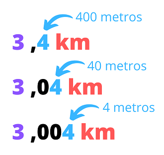

Definición: Magnitud que expresa la cantidad de materia de un cuerpo..
Ejemplo: El frutero usó una balanza para medir la masa de la sandía.
Longitud
Definición: Magnitud que mide la distancia entre dos puntos.
Ejemplo: En clase medimos la longitud de nuestros lápices con una regla.
Si queréis hacer vuestras propuestas de circuitos con actividades físicas realistas, necesitáis dominar las unidades de medida básicas de longitud y masa. En este apartado podrás aprender las unidades básicas y su conversión. ¡Ánimo!
Definición: Magnitud que expresa la cantidad de materia de un cuerpo..
Ejemplo: El frutero usó una balanza para medir la masa de la sandía.
Definición: Magnitud que mide la distancia entre dos puntos.
Ejemplo: En clase medimos la longitud de nuestros lápices con una regla.
Lectura facilitada
Si quieres proponer circuitos con actividades físicas
Necesitas conocer bien las unidades de
Longitud
Masa
En este apartado vamos a aprender:
Unidades básicas y su conversión
Lo harás genial
1. Sistema métrico
Una magnitud es cualquier propiedad que se puede medir numéricamente (masa, longitud, capacidad…).
Medir es comparar una magnitud con otra que llamamos unidad, así para medir la masa se usa como unidad el gramo, para medir la longitud se usa como unidad el metro, para medir la capacidad se usa como unidad el litro…
En nuestro sistema métrico existen otras unidades de medida que son mayores o menores a la unidad y para pasar de unas unidades a otras bastará con multiplicar o dividir por la unidad seguida de tantos ceros como puestos hay entre una unidad u otra.
A continuación os propongo unas tablas en las que podéis observar los múltiplos y submúltiplos de las distintas unidades básicas de medida como son el metro, el gramo y el litro.
En nuestra vida cotidiana nos encontramos con muchas medidas en forma de números que debemos saber interpretar. Las medidas las encontramos en una sola unidad o combinando varias de ellas (número decimales).
Hoy aprenderemos a interpretar las medidas más comunes que nos encontramos en nuestra vida diaria.
Para ello, es muy importante tener claro los siguientes conceptos:
LONGITUD
PESO
CAPACIDAD
1cm = 10 mm
1m = 100 cm
1km = 1000m
1kg = 1000gr
1l = 100 cl
1l = 1000 ml
Es fácil entender una medida cuando está expresada de manera simple, por ejemplo 4 kg o 3 km. Pero cuando vemos una medida de manera compleja (con números decimales) es necesario saber interpretar cuál es el valor de cada número. Para ello, debemos tener en cuenta que la unidad en la que está la medida se refiere a la parte entera y nosotros debemos saber interpretar la parte decimal.Si la parte entera se refiere a km, debemos saber interpretar los metros en la parte decimal. Como sabemos que 1km tiene 1000 metros, la décima se va a referir a las centenas, la centésima a las decenas y la milésima a las unidades de los metros. Igual que pasaría con los kg y los gramos.Si la parte entera se refiere a los metros y sabemos que en 1 metro hay 100 cm, debemos interpretar la décima como las decenas y la centésima como las unidades de los centímetros.
Una vez que sabemos interpretar las medidas que nos encontramos, es importante saber organizarnos para poder operar con ellas.
Por ello, debemos tener mucho cuidado y leer correctamente las unidades en las que están expresadas, ya que para poder realizar cualquier operación será necesario que todas estén en la misma unidad.
Debemos seguir los siguientes pasos para realizar cualquier cálculo:
Tener claro en qué unidad están expresadas.
Pasar la medida a la unidad que nos resulte más cómoda.
Realizar los cálculos que necesitemos.
Expresar el resultado en la media que mejor se adapte a lo que estamos midiendo. (km/m/cm)(kg/g)...
Lectura facilitada
En nuestra vida nos encontramos con medidas
Que debes saber interpretar
Las podemos encontrar en una sola unidad
O combinando varias de ellas (decimales).
Vas a aprender las medidas más comunes
Que te encontrarás en la vida diaria
Para ello, es importante lo siguiente:
LONGITUD
PESO
CAPACIDAD
1cm = 10 mm
1m = 100 cm
1km = 1000m
1kg = 1000gr
1l = 100 cl
1l = 1000 ml
Es fácil entender una medida
Cuando está expresada de forma simple
4kg o 3kg por ejemplo
Pero cuando está expresada de forma compleja
Tienes que saber el valor de cada número
Tienes que ver la unidad en la que esta la medida- parte entera.
Tienes que saber interpretar la parte decimal
Si la parte entera se refiere a Km
Tendrás que saber interpretar los metros en la parte decimal
Como sabes: 1Km tiene 1000 metros
La décima serán centenas
Centésimas serán decenas
Milésimas serán las unidades de los metros
Igual pasará con los Kg y los gramos
Si la parte entera se refiere a metros:
En un metro hay hay 100 cm
La décima será la decena
La centésima serán las unidades de los centímetros
Cuando sepas interpretar las medidas
Hay que organizarse
para que operes bien con ellas.
Tienes que tener cuidado
Tienes que leer correctamente las unidades
Porque para que puedas realizar cualquier operación
Necesitarás que estén todas en la misma unidad.
Tienes que estos pasos para calcular:
Tener claro en qué unidad están
Pasar a la unidad que nos resulte más cómoda
Realizar los cálculos necesarios
Poner el resultado en la medida que corresponda (km/m/cm)(kg/g)...
¡Te toca a ti !
A continuación te presento varios ejercicios. Puedes hacer todos los que quieras. Son actividades sobre unidades de longitud y te servirán para conseguir el reto final.
¡Ánimo, seguro que lo haces genial!
En caso de dudas puedes repasar el vídeo de ayuda para la multiplicación y división por la unidad seguida de ceros.
Apoyo visual
Opción A: Equivalencia de medidas
Complete los huecos adecuadamente. Recuerda que para hacer las conversiones debes multiplicar o dividir por la unidad seguida de ceros.
Opción B: Organizando medidas
El alumnado de un colegio de Chiclana ha diseñado un circuito deportivo por las calles de uno de sus barrios. Para ello ha diseñado un mapa donde se recoge la ubicación de las diferentes postas a realizar.
Pero faltan por calcular la distancia total que realizará el vecindario cuando lo lleve a cabo… ¿Podrías ayudarlos a realizar los cálculos y elegir la unidad en la que deberían presentar los resultados?
Opción C: Midiendo caminos
Sabiendo cuánto miden los caminos marcados, debes averiguar las distancias entre todas las postas del circuito. Para ello fíjate en el mapa y en las distancias que ya tienes y completa la tabla. Usa los caminos más cortos que conozcas.
Opción D: Inventando circuitos
Diseña dos circuitos diferentes que cumplan las siguientes condiciones:
CIRCUITO A:
Tiene que haber entre 3-6 tramos (postas). La distancia total tiene que se mayor que 9.530m y menos de 11km y 645metros.
CIRCUITO B
Tiene que tener entre 2-5 tramos (postas) La distancia total tiene que estar entre 125km 800m y 130km y 240 m.
¿Qué tal te ha ido?
Seguro que ya trabajas con medidas ¡genial!
Sigue adelante, pues aún nos queda trabajo por hacer.
 Definición: Magnitud que expresa la cantidad de materia de un cuerpo..
Definición: Magnitud que expresa la cantidad de materia de un cuerpo.. 


{kind=link}
{kind=link}